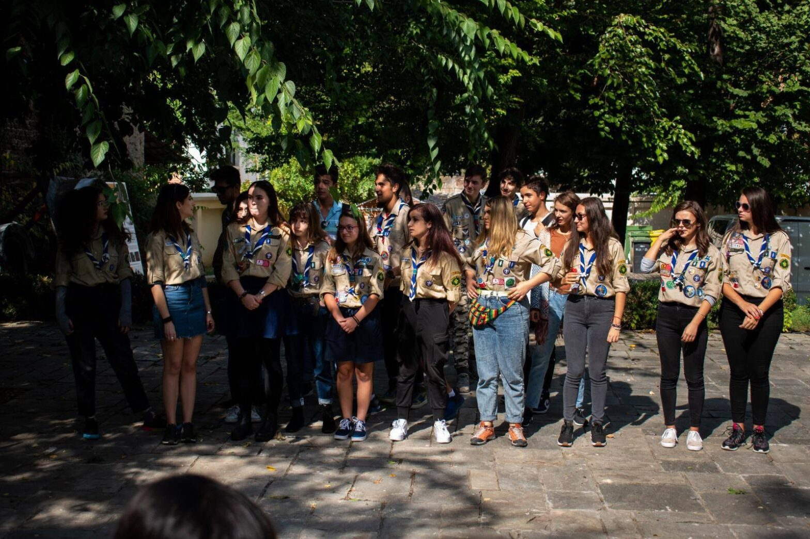
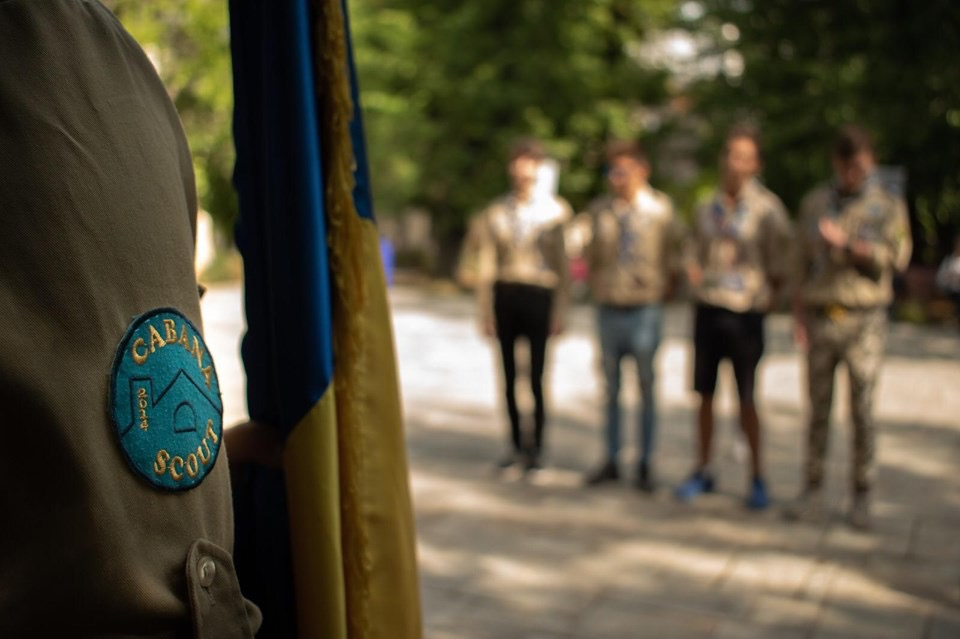

DAC Cabana – „La anul cu eșarfă"

Deschiderea Anului Cercetășesc: 28 septembrie 2019
La acest eveniment am participat ca aspirant, fiind prima dată când am intrat în contact cu cercetașii. Recunosc că la început am fost cam pierdută în spațiu, dar mi-am făcut repede prieteni care mi-au explicat în ce m-am băgat. Mi-a plăcut foarte mult că toți cei de acolo erau deschiși și foarte prietenoși, așa că integrarea celor noi nu a fost o problemă.
Totul a început cu o festivitate prin care patru foști exploratori au devenit seniori.
Inițial mi s-a părut puțin bizar, până când m-am prins cum stă treaba. Toți patru au făcut o promisiune importantă, și-au primit eșarfele noi și apoi au făcut un joc de rol la care cu toții au râs. Remarcă: aparent toți au simțul umorului pe aici.
Următorul lucru pe care l-am făcut a fost un joc de cunoaștere în care eram puși în perechi aleatorii și a trebuit să ne prezentăm unul pe celălalt în fața tuturor. Aici mi-a plăcut foarte mult că activitatea a fost făcută în așa fel încât nimeni să nu rămână pe margine, fiecare având momentul său.
După ce ne-am cunoscut cu toții, ne-am împărțit în patrule pentru a ne îndrepta către ateliere. La fiecare atelier am avut câte un joc cu tematica “Salvați Planeta” și privind elementul care definea atelierul respectiv ( pământ , apă , aer sau foc ).
În final ne-am testat cunoștințele acumulate peste zi cu privire la cercetășie printr-un joc. Trebuie să recunosc că nu reușisem să rețin prea multe, dar voi învăța pe parcurs.
Sincer, abia aștept DAC-ul de anul viitor, când voi participa purtând și eu cămașa de cercetaș.
Sofia, aspirant la eXploratori
